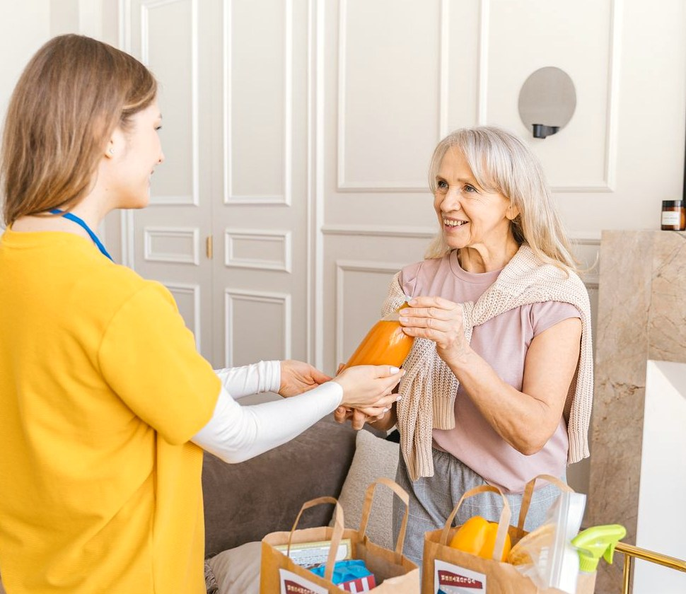
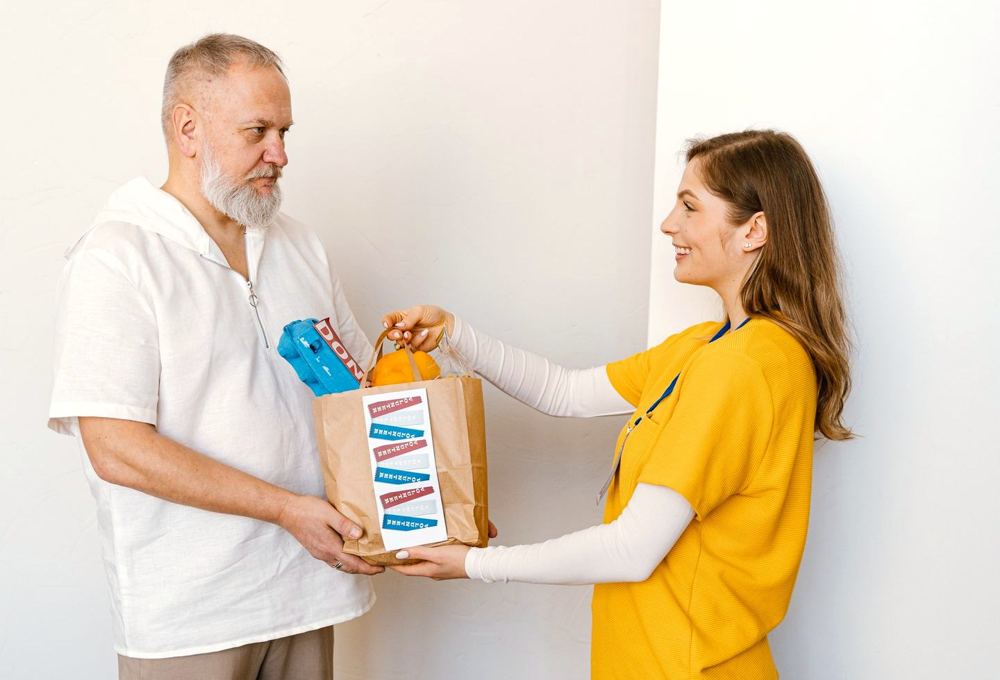

MOCKUPTKO ŠTO VIDI:
svisamo naručiteljpomagač koji dobije posaonaš tim
priskoči.hr

Pomoć u tvom kvartu
Kad obitelj nije blizu, dobri ljudi priskaču.
Umirovljenik objavi što treba — drva, žarulju, namirnice — do kada i koliko plaća. Provjereni pomagači iz kvarta dobrovoljno se jave, a naručitelj odabere kome vjeruje. U dom se ulazi samo uz izričito odobrenje.
·
priskoči.hr
Pomoć za nekoga drugog
Oglas vodite vi — iz drugog grada ili iz inozemstva. Pomagač dolazi k vašoj osobi, a sve obavijesti i plaćanje idu preko vas (karticom iz daljine, ili ona plati gotovinom na vratima).
Osoba kojoj pomažete ne mora imati ni mobitel ni račun — sve vodite vi, a pomagač se najavi na njezin kućni broj ako ga upišete.
priskoči.hr
Korak 1 od 4
Što trebate?
Pritisnite sličicu. Ako ne nađete svoje, pritisnite „Nešto drugo" i opišite svojim riječima.
Cijena piše na oglasu. Pomagači koji žele posao sami se jave, a vi odaberete kome ga dajete. Nema cjenkanja — tko se javi, pristaje na vašu cijenu.
5 €
cijena piše na oglasu — vide je svi pomagači
Vaš iznos je možda prenizak.
Za posao „" u Zagrebu većina ljudi plati 5 € ili više.
S ovako niskim iznosom možda se nitko neće javiti.
Ovo upozorenje prikazujemo samo za česte poslove, i uspoređujemo s cijenama u vašem kraju (Zagreb je skuplji od npr. Karlovca).
priskoči.hr
Korak 4 od 4
Provjerite i objavite
Objavljeno: danas u 14:02 vide svi pomagači
Obaviti najkasnije: vide svi pomagači
Kvart: Zagreb — Trešnjevka vide svi pomagači
Cijena: €piše na oglasu
Točna adresa: Trešnjevačka 00, 1. kat samo pomagač koji dobije posao
Vaš mobitel: 098 000 0000 samo pomagač koji dobije posao
Pristigle prijave pomagača vidite samo vi
Mora li pomagač ući u stan?
Ako odaberete „Da", oglas nosi oznaku u kući i vi izričito odobravate ulazak pomagaču kojeg odaberete. Pomagač koji je kod vas već obavio 3 posla izvan kuće smatra se poznatim.
Kako ćete platiti?
Kod plaćanja karticom ili mobilnim bankarstvom novac ide izravno pomagaču i skida se tek kad potvrdite da je posao obavljen. Plaćate točno dogovorenu cijenu — bez ikakvih dodataka. Zgodno ako oglas plaća obitelj iz daljine.
Oglas može objaviti i netko iz obitelji umjesto vas — sa svog računa, u vaše ime.
Provjereni pomagači s dokumentom · posao nastaje tek kad vi odobrite prijavu · naknadu Priskoči (0,46 €) uvijek plaća pomagač — vi plaćate točno dogovorenu cijenu.
priskoči.hr
Samo kod prve objave oglasa
Recite nam tko ste — bez lozinke
Da bismo vas mogli nazvati kad se pomagač javi, trebamo samo vaše ime i broj mobitela. Nema lozinke, nema e-pošte, nema dokumenata.
3. Da provjerimo da je broj stvarno vaš, šaljemo vam običnu SMS poruku s brojem od 4 znamenke:
Na broj 098 000 0000 stigla je poruka: „Vaš Priskoči kod je 7319."
7319
(u demou su znamenke već upisane umjesto vas — kod ne trebate pamtiti, svaki put stigne novi)
Sljedeći put ovog koraka nema — prepoznajemo vaš broj. Račun može otvoriti i obitelj pa voditi oglase u vaše ime.
priskoči.hr
Oglas je objavljen

Pomoć je stigla na vrata — s osmijehom. (arhiva Priskoči)
Pomagači koji žele vaš posao dobrovoljno se jave na oglas. Čim stigne prijava, mi vas nazovemo ili pošaljemo SMS — a vi odlučite kome dajete posao.
Javio se pomagač.vidite samo vi
Ivan K., 21 — student Provjeren · 37 obavljenih poslova · 5 pisanih pohvala · pristaje na vašu cijenu.
Nitko ne dobiva posao dok vi ne odaberete. Oglas dotad ostaje objavljen.
Posao je dogovoren! Ivan će obaviti posao za €.
Ivan K., 21 — student Provjeren
37 obavljenih poslova · govori hrvatski · dokument provjeren
„Brz i uredan, donio je i složio sva drva. Sve pohvale." — naručiteljica, listopad
Nakon posla pritisnete „Posao je obavljen". Ako želite, možete napisati par riječi o Ivanu — ne morate.
priskoči.hr
Postani pomagač
Radimo s ljudima kojima drugi otvaraju vrata svog doma — zato je provjera stroga i obavezna. Umirovljenici ne prolaze nikakvu provjeru niti šalju dokumente.
1
Slikaj osobnu iskaznicu ili vozačku Vidi je samo naš tim, nikad drugi korisnici. Čuva se šifrirano.
2
Slikaj se uživo Uspoređujemo s dokumentom — da nitko ne radi pod tuđim imenom. Ova slika ide na tvoj profil i vide je naručitelji.
3
Kratka provjera hrvatskog jezika Nekoliko pitanja — naši korisnici su stariji ljudi i moraš se moći sporazumjeti.
4
Auto i prijevoz Kažeš imaš li auto, dolaziš li u udaljenija mjesta i želiš li voziti starije (liječnik, pošta, dućan).
5
Odobrenje u roku 24 sata Dobivaš oznaku Provjeren i možeš se javljati na oglase.
priskoči.hr
Prijava pomagača — korak 1 od 5
Tvoji podaci
priskoči.hr
Prijava pomagača — korak 2 od 5
Slikaj osobnu ili vozačku
Dokument primljen. Čuva se šifrirano i briše čim više ne treba. vidi samo naš tim
priskoči.hr
Prijava pomagača — korak 3 od 5
Slikaj se uživo
Uspoređujemo lice s dokumentom — da nitko ne radi pod tuđim imenom. Ova slika ide na tvoj profil. profil vide svi
Lice odgovara dokumentu.
priskoči.hr
Prijava pomagača — korak 4 od 5
Kratka provjera hrvatskog
Primjer pitanja (u pravoj prijavi ih je nekoliko + kratki razgovor):
„Gospođa te moli da joj iz ljekarne doneseš lijekove ‘na recept’. Što moraš uzeti kod nje prije odlaska u ljekarnu?"
Točno.
priskoči.hr
Prijava pomagača — korak 5 od 5
Auto i prijevoz
Oglasi s vožnjom i u udaljenijim mjestima nose oznaku treba auto i nude se samo pomagačima s autom. Za vožnju starijih obavezna je vozačka dozvola (provjerena u koraku 2).
1 · Odaberi županije
2 · Odaberi gradove i mjesta
3 · Odaberi kvartove
Čim osvane novi posao u odabranom području, stiže ti obavijest (SMS ili aplikacija). Odabir mijenjaš kad god želiš.
priskoči.hr
Prijava je zaprimljena
Naš tim pregledava tvoje podatke — odobrenje u roku 24 sata. Javimo ti SMS-om. Dok čekaš, slobodno razgledaj oglase; javljati se možeš čim dobiješ oznaku Provjeren.
priskoči.hr
Oglasi u tvojoj blizini
Cijena naručitelja piše na svakom oglasu. Javi se na posao koji ti odgovara — naručitelj od prijavljenih bira kome vjeruje. Oglasi s oznakom u kući traže ulazak u dom: naručitelj ga izričito odobrava. Oglasi kojima je rok prošao stoje na vrhu — pomoć im najviše treba.
Starijim naručiteljima stranica se sama otvara s velikim slovima — gumb je tu da vidiš kako to izgleda.
Donijeti kruh, mlijeko i osnovne namirnicerok prošao
Zagreb — Trnje · objavljeno prekjučer u 16:10 · rok je bio: jučer 18 h — još se nitko nije javio
procjena trajanja: oko 30 min
4 €
Donijeti drva iz podruma na 1. kat (oko pola metra drva)
Zagreb — Trešnjevka · objavljeno danas u 14:02 · obaviti do: danas 18 h
procjena trajanja: oko 25 min
5 €
Kupovina u dućanu i dostava na 3. kat (bez lifta)
Karlovac — centar · objavljeno danas u 13:40 · obaviti do: sutra 12 h
procjena trajanja: oko 40 min
6 €
Odvesti gospođu na pregled u bolnicu i natrag (čekanje oko 1 h)treba auto
Zagreb — Rebro · objavljeno danas u 12:15 · obaviti: utorak u 9 h
procjena trajanja: oko 1 h 45 min (s čekanjem)
15 €
Podići lijekove u ljekarni, nanijeti drva za tjedan na 2. kat i zamijeniti žaruljuu kući
Zagreb — Trešnjevka · objavljeno danas u 13:55 · obaviti do: sutra prijepodne
procjena trajanja: oko 65 min s autom · oko 80 min pješice
Izračun: najbliža otvorena ljekarna 450 m (~15 min) + drva ~8 tura košarom na 2. kat (~35 min) + žarulja (~10 min). Raspon 1–2 h → pišemo donji rub.
12 €
Zamjena dvije žarulje i popravak slavineu kući
Zagreb — Maksimir · objavljeno jučer u 19:30 · obaviti do: nedjelje
procjena trajanja: oko 35 min
6 €
Pokositi travu i složiti drva uz kućutreba auto
Rečica kraj Karlovca (selo, 15 min vožnje) · objavljeno jučer u 10:20 · obaviti do: subote
procjena trajanja: oko 2 h
25 €
Pratnja do pošte i banke (pješice, polako)
Karlovac — Banija · objavljeno danas u 9:05 · obaviti: četvrtak ujutro
procjena trajanja: oko 50 min
7 €
Za odabrane filtre trenutačno nema oglasa.
priskoči.hr
Donijeti drva iz podruma na 1. kat
Zagreb — Trešnjevka · objavljeno danas u 14:02 · obaviti do: danas 18 h
procjena trajanja: oko 25 min
5 €
Javi se ako želiš ovaj posao za 5 €. Naručiteljica vidi tvoju prijavu i profil pa odlučuje kome daje posao. Ništa ne plaćaš dok posao nije dogovoren.
Prijava je poslana. Možeš je besplatno povući dok te naručiteljica ne odabere. Ako te odabere, stiže ti SMS — i s računa ti se skida naknada Priskoči (0,46 €).
Posao je tvoj za 5 €! S tvog računa skinuta je naknada 0,46 € (novi saldo: 3,62 €).
Adresa: Trešnjevačka 00, 1. kat · Kontakt: Marija H. (072 xxx xxx)vidiš samo ti — posao je tvoj Naručiteljica plaća gotovinom na licu mjesta — dobivaš punih 5 €. Ako posao otpadne bez tvoje krivnje, 0,46 € se vraća na tvoj račun.
Prazan saldo? Dogovoreni posao uvijek smiješ odraditi — samo se ne možeš javljati na nove oglase dok ne nadoplatiš.
priskoči.hr
Moji poslovi
Ovaj mjesec
87,50 € zarađeno
14 obavljenih poslova · 5 pisanih pohvala
Moj račun
Saldo: 3,62 € — s njega se sama skida naknada 0,46 € kad te naručitelj odabere za posao.
Prvi posao je besplatan. Od drugog posla treba saldo — najmanja nadoplata 5 € (dosta za 10 poslova), karticom ili KEKS Pay-em, sjedne odmah. Prazan saldo ne ruši dogovoreni posao — samo se ne možeš javljati na nove oglase. Posao otpao bez tvoje krivnje → 0,46 € se vraća.
Donijeti drva — danas u 16 h
Marija H., Trešnjevka · dogovoreno: 5 €
priskoči.hr
Sigurnost i naknada
Provjereni pomagači. (arhiva Priskoči)
Tko smije pomagati?
Samo provjereni ljudi: osobna ili vozačka + slikanje uživo (uspoređujemo lice s dokumentom) + provjera hrvatskog jezika. Ocjena i zvjezdica nema — ali nakon posla i naručitelj i pomagač mogu, ako žele, napisati par riječi jedan o drugome, pa pohvale stoje na profilu.
Cijena i prijave
Cijena naručitelja piše na oglasu. Pomagači koji žele posao dobrovoljno se jave, a naručitelj od prijavljenih odabere kome vjeruje — tek tada je posao dogovoren. Nema cjenkanja ni nadmetanja. Na svakom oglasu piše i kad je objavljen i rok. Rok nije kraj oglasa: posao se može dogovoriti i poslije njega, a oglasi kojima je rok prošao prikazuju se prvi, da ih svi vide. Kad rok prođe, naš tim to vidi i po potrebi se uljudno javi naručitelju. prati naš tim
U kući ili izvan kuće?
Svaki posao je ili izvan kuće / do vrata (drva do vrata, dućan, ljekarna, dvorište, prijevoz) ili nosi oznaku u kući (čišćenje, žarulja, slavina...). U dom se ulazi samo uz izričito odobrenje naručitelja — daje ga kad odabere pomagača. Pomagač koji je kod istog naručitelja već obavio 3 posla izvan kuće smatra se poznatim; naručitelju to i pokažemo („Ivan je kod vas već bio 3 puta").
Što s umirovljenicima?
Nikakva provjera, nikakvi dokumenti, nikakva slika. Samo ime, telefon i kvart. Stranica im se prikazuje velikim slovima. Oglas može voditi i obitelj u njihovo ime (npr. kći iz Njemačke objavi oglas za mamu u Karlovcu — gumb „Želim pomoć za nekoga" na početnoj).
Auto i prijevoz
Kod prijave svaki pomagač kaže ima li auto, dolazi li u udaljenija mjesta (sela, kvartovi izvan centra) i želi li voziti starije — liječnik, bolnica, pošta, dućan. Takvi oglasi nose oznaku treba auto i nude se samo pomagačima s autom; za vožnju starijih obavezna je vozačka dozvola.
Kako se plaća posao?
Na izbor naručitelja: gotovinom izravno pomagaču kad je posao gotov, ili karticom / mobilnim bankarstvom kroz aplikaciju (zgodno kad plaća obitelj iz daljine) — novac tada ide izravno pomagaču i skida se tek kad naručitelj potvrdi da je posao obavljen. U oba slučaja naručitelj plaća točno dogovorenu cijenu, bez ikakvih dodataka.
Od čega živi Priskoči?
0,46 € po dogovorenom poslu — uvijek plaća pomagač. Skida se s njegova računa u trenutku kad ga naručitelj odabere. Prvi posao je besplatan; od drugog pomagač drži saldo (najmanja nadoplata 5 € = 10 poslova, karticom ili KEKS Pay-em). Prazan saldo ne ruši dogovoreni posao — samo se ne može javljati na nove oglase. Posao otpao bez pomagačeve krivnje → naknada se vraća; ako se pomagač ne pojavi, naknada propada. Objava, gledanje, prijave i povlačenje prijave prije odabira — sve besplatno.
Upozorenje na prenisku cijenu
Za česte poslove (drva, dućan, žarulja...) pratimo koliko se stvarno plaća po regiji. Ako je cijena u najnižih 10 % za taj posao u tom kraju, umirovljeniku odmah kod objave kažemo: „Ovo je možda prenisko — većina plati X € ili više." Za rijetke i neobične poslove ne prikazujemo ništa, jer nemamo s čime usporediti.
Procjena trajanja
Za česte poslove uz oglas piše i koliko otprilike traju, da pomagač zna što prihvaća. Računamo iz dijelova posla: najbliža otvorena ljekarna od adrese, ide li se autom ili pješice, koliko naramaka drva stane u košaru i koliko je tura po stubama, prosječno vrijeme za žarulju... Kod raspona namjerno pišemo broj uz donji rub — ako izračun kaže 1–2 sata, na oglasu piše „oko 65 min".
Obavijesti o novim poslovima
Pomagač kod prijave bira županije, u njima gradove i mjesta, a u većim gradovima (Zagreb, Split, Rijeka, Osijek, Zadar, Pula, Varaždin, Karlovac, Šibenik, Dubrovnik, Velika Gorica, Čakovec) i pojedine kvartove. Obavijest (SMS ili aplikacija) stiže čim u odabranom području osvane novi posao; odabir mijenja kad god želi.
Tko što vidi?
Opis posla, kvart, rok, cijena i profil pomagača vide svi
Pristigle prijave pomagača samo naručitelj
Točna adresa i brojevi telefona samo pomagač koji dobije posao
Dokumenti pomagača (osobna, vozačka) samo naš tim
priskoči.hr
Uvjeti korištenja
Nacrt za mockup — prije objave prave stranice dati odvjetniku na pregled. Zadnja izmjena: 7. studenoga 2026.
1. Što je priskoči.hr
priskoči.hr je internetska oglasna ploča koja povezuje naručitelje (osobe kojima treba pomoć ili njihovu obitelj) i pomagače. priskoči.hr nije izvođač poslova, nije agencija za posredovanje pri zapošljavanju, nije poslodavac pomagačima niti ugovorna strana u poslu.
2. Ugovor sklapaju korisnici izravno
Dogovor o poslu — što se radi, kada, za koju cijenu — nastaje izravno između naručitelja i pomagača. priskoči.hr samo prenosi oglase, ponude i obavijesti.
3. Isključenje odgovornosti
U najvećoj mjeri dopuštenoj propisima Republike Hrvatske, priskoči.hr ne odgovara za: loše, nepotpuno ili nepravodobno obavljen posao; štetu na stvarima, imovini ili osobama nastalu u vezi s obavljanjem posla; ponašanje korisnika; točnost podataka koje su korisnici naveli u oglasima, ponudama i profilima; izostanak pomagača ili naručitelja s dogovorenog posla; niti za procjene trajanja i usporedbe cijena, koje su informativne. Korisnici posao dogovaraju i obavljaju na vlastitu odgovornost.
4. Provjera pomagača nije jamstvo
Provjeru pomagača (dokument, slikanje uživo, provjera jezika) provodimo pažljivo, ali ona je mjera opreza, a ne jamstvo stručnosti, pouzdanosti ili kvalitete rada, niti preporuka platforme.
5. Naknada
Naknada iznosi 0,46 € po dogovorenom poslu, plaća je pomagač i skida se s njegova salda u trenutku kad ga naručitelj odabere; prvi posao je oslobođen naknade. Naručitelj uvijek plaća točno dogovorenu cijenu. Objava oglasa, razgledavanje, prijave i povlačenje prijave prije odabira su besplatni. Ako dogovoreni posao otpadne bez krivnje pomagača, naknada se vraća na saldo; ako se pomagač ne pojavi, naknada se ne vraća. Prazan saldo ne utječe na već dogovoreni posao, ali onemogućuje nove prijave.
6. Sporovi među korisnicima
Sporove iz obavljenog ili neobavljenog posla rješavaju naručitelj i pomagač međusobno. priskoči.hr može, na zahtjev i prema vlastitoj procjeni, pomoći posredovanjem, ali na to nije obvezan. Korisnicima koji krše pravila ili zloupotrebljavaju platformu možemo ukinuti račun.
7. Promjene uvjeta
Uvjete možemo mijenjati; o bitnim promjenama korisnike obavještavamo na stranici ili porukom. Nastavak korištenja nakon promjene znači prihvaćanje novih uvjeta.